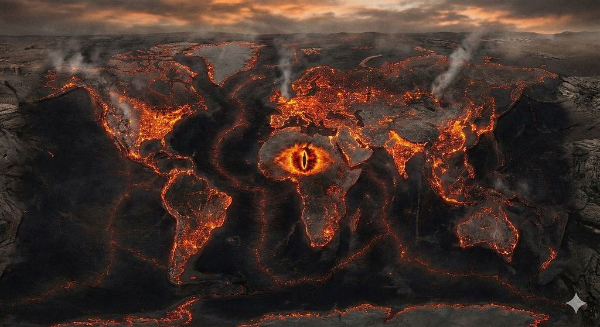
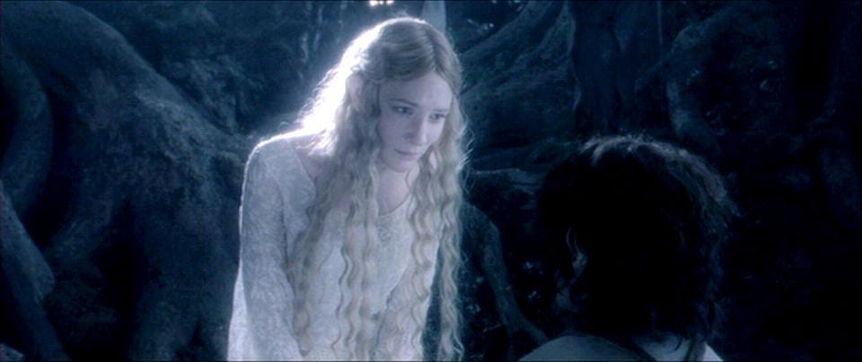

The Davos Silence: Are We Sleepwalking Into Mordor?

I spent the last week glued to livestreams from Davos, watching the world’s elites shuffle through the 2026 World Economic Forum. It was a strange spectacle, a mix of idealistic rhetoric and palpable panic. I tried to bring this up with some friends, but quickly realized I was killing the mood. It’s hard to worry about the macroeconomic outlook when you’re just trying to navigate the daily grind.
To entertain myself during this weekend’s snowstorm, I decided to binge The Lord of the Rings trilogy. I heard the names: Palantir, the all-seeing stone, and Anduril, the sword of the King. They are also the names of the real-world defense and surveillance titans currently building the infrastructure for the next global conflicts. I paused The Return of the King to write this because I can’t shake the feeling that we are living through a historic pivot point.
For decades, the assumption was that free trade would stop wars. If we all bought each other’s goods, we wouldn’t bomb each other. With the renewed aggression in tariff policies and the “America First” stance entrenched by the Trump administration, we are watching the active dismantling of the post-World War 2 international order.
History tells us that when goods stop crossing borders, soldiers usually do. We are seeing a return to the zero-sum thinking of the past: for me to win, you must lose. This brings me to a hard pill to swallow: the parallels to the 1930s. You have to look at the two ingredients brewing:
- Fragile Global Economy: Just like during the Great Depression, we are seeing protectionism and trade wars choke off growth.
- Extreme Inequality: When people feel the system is rigged, when they see “Kings” passing billions around while their own standard of living decays, they turn to populism and extremism.
Are we destined for another world war? Not necessarily. The existence of nuclear weapons changes the calculus. However, stability is an anomaly, not the default. The 20th century middle-class boom was a historical outlier created by the unique conditions after World War 2. We seem to be reverting to the mean.
The wealth gap today rivals that of the Gilded Age. We are drifting toward what economists call Techno-Feudalism. There are also fears that AI will replace the labor force and gut the middle class. However, the ultra-wealthy still need consumers to sustain their fortunes. The real danger is that their short-term greed might break the economic engine before they realize they need us to keep it running.
So What Do We Do?
Honestly… I’m not sure… but this bleak outlook isn’t an excuse for nihilism. A distracted, exhausted populace is easy to control. We have to stop treating politics like a spectator sport. We need to vote and organize around antitrust and labor rights. We must push for leaders who understand that international cooperation isn’t weakness, but rather the only insurance policy against global catastrophe.

The future isn’t written yet, but we cannot assume the “adults in the room” will write it in our favor. We are standing at a critical crossroads. Like Galadriel said, “even the smallest person can change the course of the future”.